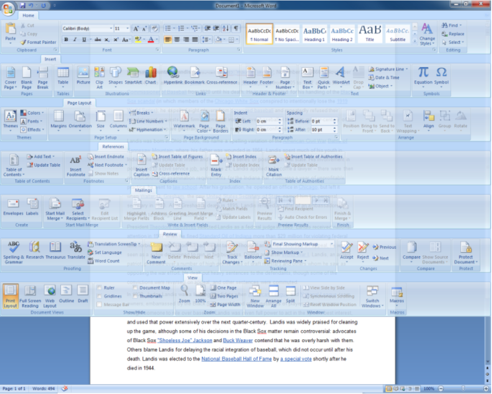
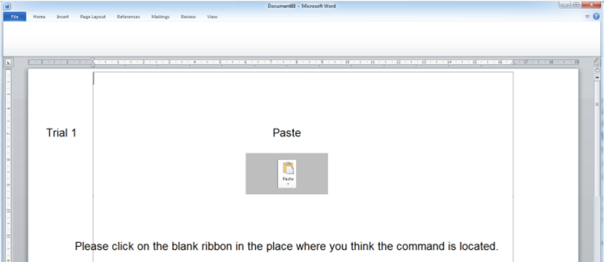
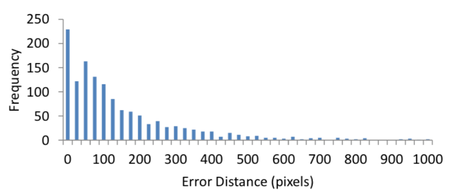

【译】通过“命令地图”改善命令选择
论文题目：Improving Command Selection with CommandMaps
作者：Joey Scarr, Andy Cockburn, Carl Gutwin, Andrea Bunt
来源：CHI 2012, May 5–10, 2012, Austin, Texas, USA
本文提出了提出了使用空间记忆与层级扁平化相结合的提高GUI绩效的方法。我们（作者）通过设计一种叫做“命令地图”的命令选择界面，并分析其理论性能特性证实了这个框架。然后，研究者在新手用户及专家用户中评测了“命令地图”、菜单和微软的Ribbon界面。结果表明，对于新手用户，“命令地图”相对于传统界面并没有显著的差异，而专家用户在操作“命令地图”时速度较于传统界面有显著的提升。
GUI设计人员由于屏幕空间的限制，通常需要使用菜单等层次结构的命令。然而层级组织结构经常被认为减慢了专家用户的操作。本文中，我们探索利用空间记忆作为可取代层级选择技术的快速检索机制，这种空间记忆可以适应GUI系统的整体外观和表现风格。基于空间记忆，我们开发了一个名为CommandMaps（CMs）技术。CMs有两个主要特性：它们一次显示出所有的应用命令，并且通过保持空间稳定性促使用户对经常使用的命令建立一种空间记忆（如下图1）。
结合先前的研究结果表明，我们可以通过在一个尽量浅的层级中相对稳定的空间条目来提高专家用户的绩效。
基于此我们进行了以下研究：
研究一：GUIs用户的空间知识
我们总体假设空间记忆能够成为命令选择界面的基础。为了检验这一假设，我们进行了一项研究去检验是否微软Word2010的有经验的用户对Ribbon界面中熟悉的命令都建立了空间知识。
12个认为自己是Word2010的经验用户参与了实验，实验环境为安装了Win7系统，配备1600*1200分辨率显示器的PC。参加者需要完成以下三个任务：
任务一：确定熟悉命令。
参与者通过检查Word2010的界面原型指出哪些是他们熟悉的功能命令。
任务二：在隐藏的功能区中确定任务一中选择的功能命令按钮的位置。
展示给参与者在任务一中选择的命令按钮的图标及名称，然后要求参与者在完全被隐藏的功能界面中定位点击他们认为的该按钮的位置（如图2）。实验系统会记录下被试者的空间记忆中这些命令按钮的错误位置。
任务三：使用功能区中的选择命令。
参与者需要在功能界面中找出命令按钮。参与者点击功能标签，标签显示出来，直到参与者选择到正确地命令按钮结束任务。系统将记录下标签切换次数及点击次数。
参与者完成了任务一后，对其选定的每个任务交替完成任务二和任务三。命令以随机顺序显示，每个命令显示两次。
结果：
熟悉命令的数量。总体而言参与者选择了59.6个熟悉命令。许多参与者会选择所有他们曾经使用过的命令，而不是他们熟悉的经常使用的命令。
空白功能区内的误差距离。参与者点击空白功能区内的位置与正确功能按钮中心距离平均偏差为147像素。然而，其中有几个异常值（见图3），这表明一些命令并不是参与者所熟知的。中位误差值为92像素，在实验显示器上大概有2.5cm的距离。图三展示了错误距离分布
选择标签数量。当选择可见的功能标签时，参与者经常在一个选项标签中寻找命令按钮。然而，在28%的试验中需要超过一个标签的选择，选择到正确命令的整体平均次数为1.95。
这些结果为我们提供了两个主要结论。首先，人们在图形用户界面对很多命令位置有一个良好的空间位置记忆；其次，人们知道他们熟悉的大多数命令的选项卡标签，但是也有28%的命令他们需要进行多次选择找到正确地选项卡标签。
研究二：专家用户使用CMs
研究二和三比较了新手用户及专家用户使用CMs、功能区和菜单是的表现。研究四比较了用户在两个允许窗口几何操作的CM的变体设计中的表现。所有参与者在单独的一小时内完成研究二到四。
步骤：
所有参与者使用三个界面完成任务：一个模拟真实地功能区界面、菜单和CMs。在菜单中，采用7个顶层菜单配套功能区的标签，包含每个标签内的每个命令条目，以及类似的组间分离。实验形成了三套命令目标，每个由分布在三个不同标签的六条命令组成：三个在Home标签下，两个在插入标签下，一个在视图标签下。每个参与者在一个界面中使用同样的指令集，然后在接下来的界面中使用不同的指令集。命令集的顺序由拉丁方来平衡。
熟悉模块包括30次实验，每组5个选项，共六组任务目标。而性能模块包括90次实验，同样任务目标包括15个选项。选择顺序是随机的，指导符合我们的约束条件，即当使用功能区的时候有50%的可能涉及标签切换。
参与者使用每个界面完成NASA-TLX的表单，在实验最后排序三个界面的偏好顺序。
结果：
CMs的界面采集时间比功能区快25%比菜单快34%。如图5a所示，CMs和功能区在同样地任务中表现相似，而在不同父标签任务中CMs相对较快。在不同父标签任务中，功能区的功能交叉性使其比菜单的表现更差。
CMs的出错率比功能区和菜单都要低，通过5b可以看出，CMs的错误率是相对不受父标签任务影响的，而功能区和菜单在有不同的父标签任务中要高得多。用户反馈更倾向于CMs，被试中有14人选择最喜欢CMs，2个选择最喜欢功能区，2个最喜欢菜单。
研究三：新手用户使用CMs
创建每组24个条目的五组（动物，卡通人物，食品，办公用品，体育）数据。仅仅动物、食物、运动项目被用作目标。
任务界面与研究二中的使用方法相同，任务被试在每个界面中完成24个任务。包括在三个不同的群体中选择八个不同的目标。任务呈现的顺序控制有一半的任务涉及切换父组。
结果：
CMs和功能区的平均采集时间相似，但菜单较慢。在相同父组任务中，功能区稍快于CMs，但在不同父组的任务中，CMs稍快于功能区。错误率为CMs2.8%,功能区6.6%，菜单16%。
在新手用户中，CMs和功能区表现相似，但都比菜单要好。
研究四：CMs的窗口几何布局
研究二、三中使用大量的静态窗口，但实际部署中需要窗口位置和大小适应变化。下述实验对比了采用基于窗口范围内缩放及使用弹出窗口两种方式，以应对几何形状的操控反应问题。
实验任务为选择研究二种的同样6个目标，被试在缩放窗口和弹出窗口中都选择36次。六个目标重复进行两次，每个目标都要在三种尺寸（Full,50%,25%）的窗口大小中进行。两次选择前后使用不同窗口大小。
结果:
弹出窗口比缩放快很多，扩展缩放窗口的稳定性明显低于弹出窗口。这表明缩放窗口尺寸之间的过度突变会显著损害界面表现性能。
总结：
实验发现，对于新手用户来说，CMs和标准的GUI技术之间没有整体显著差异，说明空间记忆方法没有施加给新手用户使用的额外负担。而当用户积累了较多的使用经验后，用户更倾向于使用CMs。由于功能区界面的父级开关性能交叉效应使得CMs选择明显需要较少的时间，它比菜单快34%比Ribbons快25%，此外，使用CMs的出错率是其他界面的十分之一。
这些结果表明，空间记忆可以成功地运用在GUI界面命令选择机制中，并且UI设计人员可以使用将基于空间记忆的CMs实例应用于设计之中来显著性的提高专家用户的绩效上限。
To Say